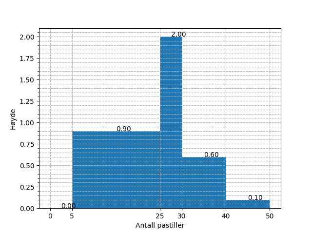

2P fagdag - Statistikkoppgaver
Du er elev 7 i klasse 2PC4.
Definisjon
Gjør rede for følgende begrep og gi et eksempel på hver:
typetall, gjennomsnitt og kvartilbredde
Bruk av sentral- og spredningsmål
Finn median, gjennomsnitt, kvartilbredde og standardavvik for følgende verdier:
21.98 16.32 16.16 22.42 22.27 9.83 14.78 14.66 14.33 8.86 18.21 14.49 -3.26 12.63 4.90
Medianen er 14.66. Gjennomsnittet er 13.91. Kvartilbredden er 6.03. Standardavviket er 6.63.
Frekvenstabell
Velg en av alternativene under.
Alternativ 1 Finn median, typetall, gjennomsnitt og variasjonsbredde for dataene undder.
| Terningkast | Frekvens |
|---|---|
| 1 | 2 |
| 2 | 8 |
| 3 | 2 |
| 4 | 4 |
| 5 | 4 |
| 6 | 4 |
Gjennomsnittet er 3.50. Medianen er 3.5. Typetallet er 2. Variasjonsbredden er 5.
Alternativ 2 Finn median og gjennomsnitt for dataene under.
| Poeng | Frekvens |
|---|---|
| [0, 20> | 3 |
| [20, 40> | 3 |
| [40, 60> | 8 |
| [60, 80> | 3 |
| [80, 95> | 4 |
| [95, 100> | 2 |
Gjennomsnittet er 55.43. Medianen er 52.50.
Den nye læreren
På en skole jobbet det i utgangspunktet 17 realfagslærere, som da hadde en gjennomsnittsalder på 47.06 år. Det begynner så en ny lærer på skolen, og brått blir gjennomsnittsalderen 48.17 år.
Hva er aldereden til den nye læreren?
Fasiten er 67.
Diagramtolkning
Diagrammet under viser visualiseringen av to datasett. Hva kan du si om sentral- og spredningsmål for de to i forhold til hverandre?
Histogrammet
Histogrammet under viser fordelingen av svar på en "hvor mange pastiller er det i krukka"-oppgave, hvor mange deltok?

- Ut fra verdiene i histogrammet over, hva vil du tro mengden pastiller i krukka var?
Fasiten er 34.
Kumulativ match
Under vises et stolpediagram og fire foreslåtte kummulative grafer. Hvilken av de fire alternativene tilhører dataene fra stolpediagrammet?
Fasiten er a).
Foreslå visualisering
Velg to av pounktene under og illustrer dem i hvert sitt diagram. Begrunn valget av diagram.
- Karakterfordelingen i en klasse etter en prøve (rundt 30 elever)
- Karakterfordelingen for en skole etter en heldagsprøve i norsk (rundt 600 elever)
- Gjennomsnittskarakteren for årets FIFA-spill for årene 1996 til 2017.
- Aldersfordelingen for de som ser på Dagsrevyen mer enn to ganger hver uke.
Skisser
For to av punktene i forrige oppgave, skisser hvordan en slik fordeling kan se ut.
Statistisk analyse
Velg ett av de to alternativene under.
Alternativ 1 I en 2P-klasse ble det gjennomført en prøve, under vises poengene, som var fra 0 til 20.
6 12 2 12 17 20 17 13 13 15 17 15 16 8 7 3 14 14 19 8 16 4 6 20 6 15 15 10 7 10 14 14
- Regn ut gjennomsnitts- og medianpoengene til elevene.
- Tegn et diagram som illustrerer dataene
Medianpoengene er 13.50. Gjennomsnittspoengene er 12.03.
Alternativ 2 På en skole ble det gjennomført en 2P-prøve for et trinn. Poengene, som var fra 0 til 100, blei som vist under.
98 48 40 44 72 55 65 64 21 70 100 43 58 56 32 68 58 57 78 70 43 51 67 55 93 11 45 97 74 0 62 87 100 56 3 26 95 60 57 66 56 100 32 76 36 45 66 19 24 74
- Grupper dataene i en frekvenstabell hvor gruppene er [0, 20>, [20, 40>, [40, 60>, [60, 80>, [80, 95>, [95, 100].
- Finn gjennomsnittspoengene både via det grupperte materialet, og eksakt. Forklar eventuelle forskjeller på de to tallene.
- Vis dataene i et histogram.
Gruppene over viser til en typisk karakterinndeling. En av lærerne på skolen, ønsker å gjøre det litt vanskeligere å bestå,så alt under 25 poeng gir karakteren 1, men litt lettere å få karakteren 6, nå fra 90 poeng. Hvordan ville det påvirket karakterfordelingenpå trinnet?
| Poeng | Antall |
|---|---|
| [0, 20> | 4 |
| [20, 40> | 6 |
| [40, 60> | 17 |
| [60, 80> | 15 |
| [80, 95> | 2 |
| [95, 100> | 6 |
Eksakt gjennomsnitt er 57.46. Gruppert gjennomsnitt er 57.60.
Antall 1-ere etter endring er 6. Antall 6-ere etter endring er 7.